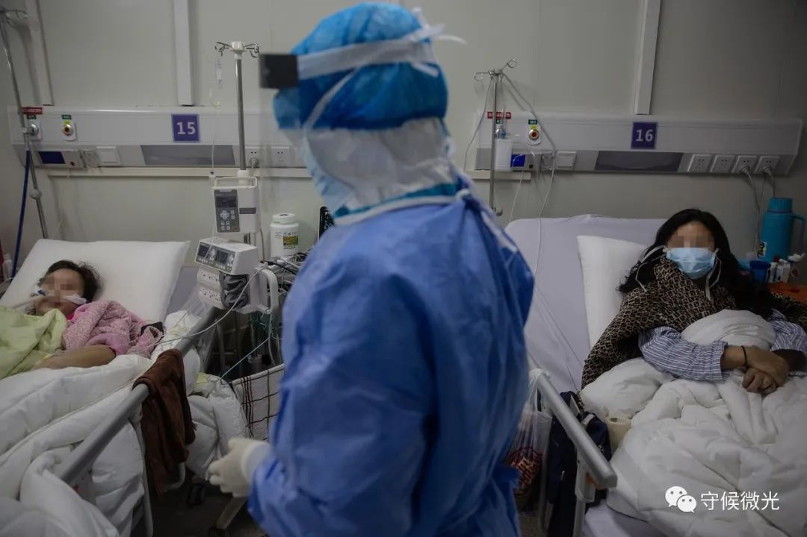
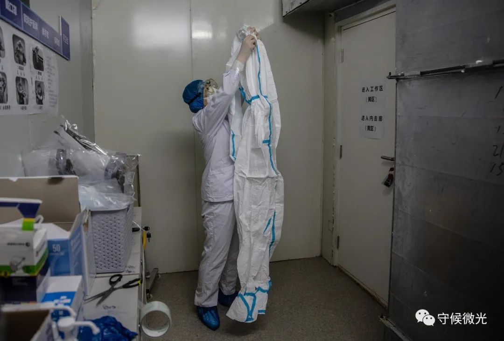
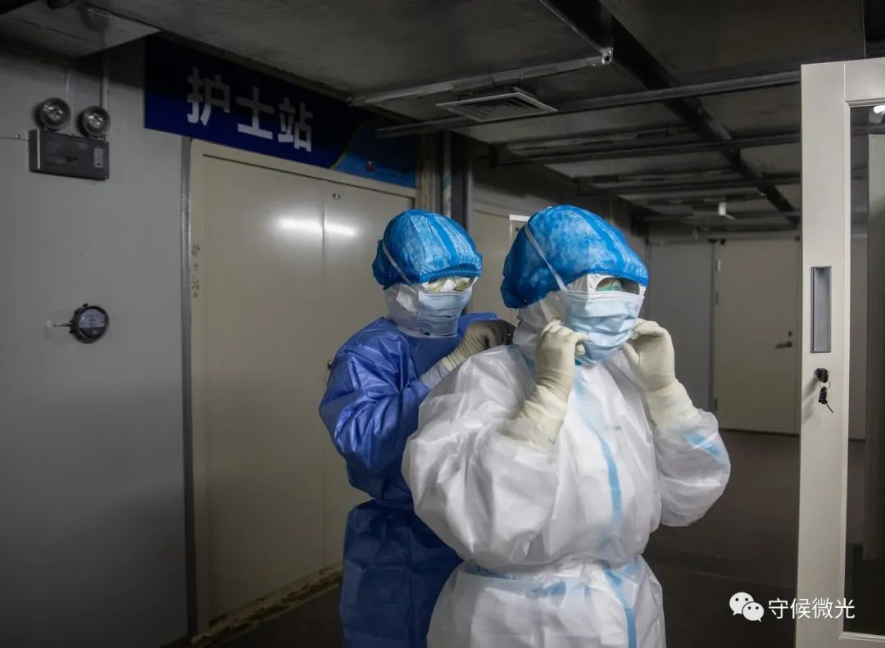
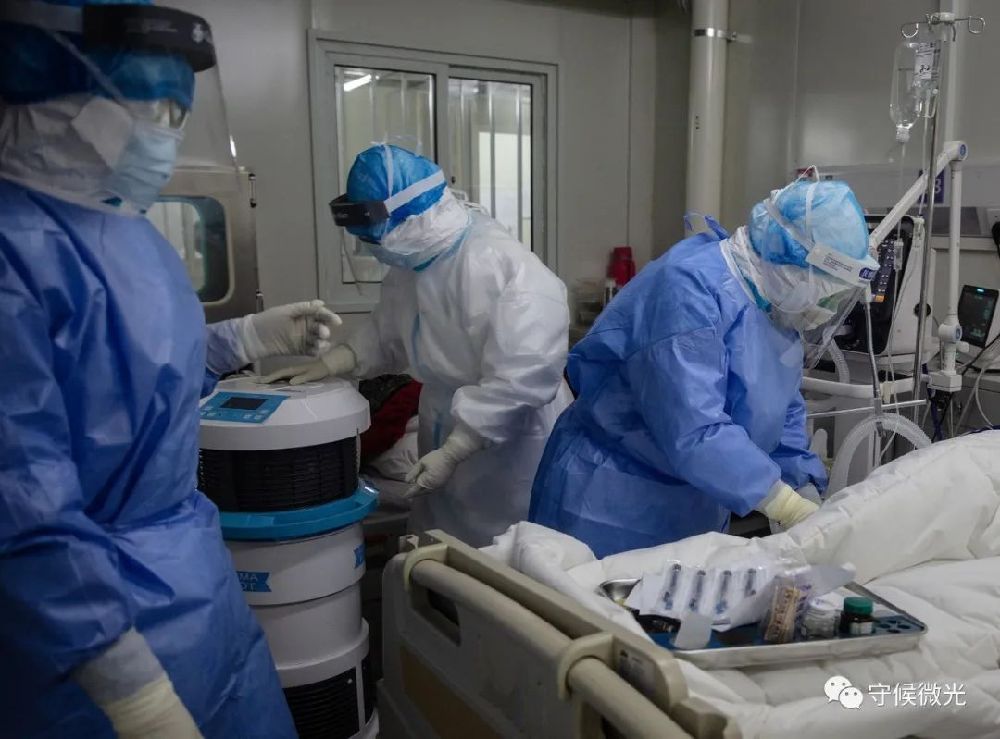
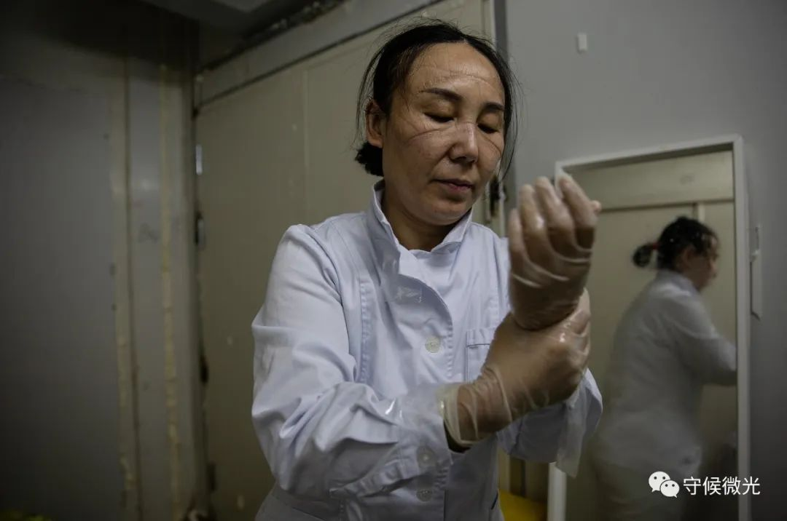
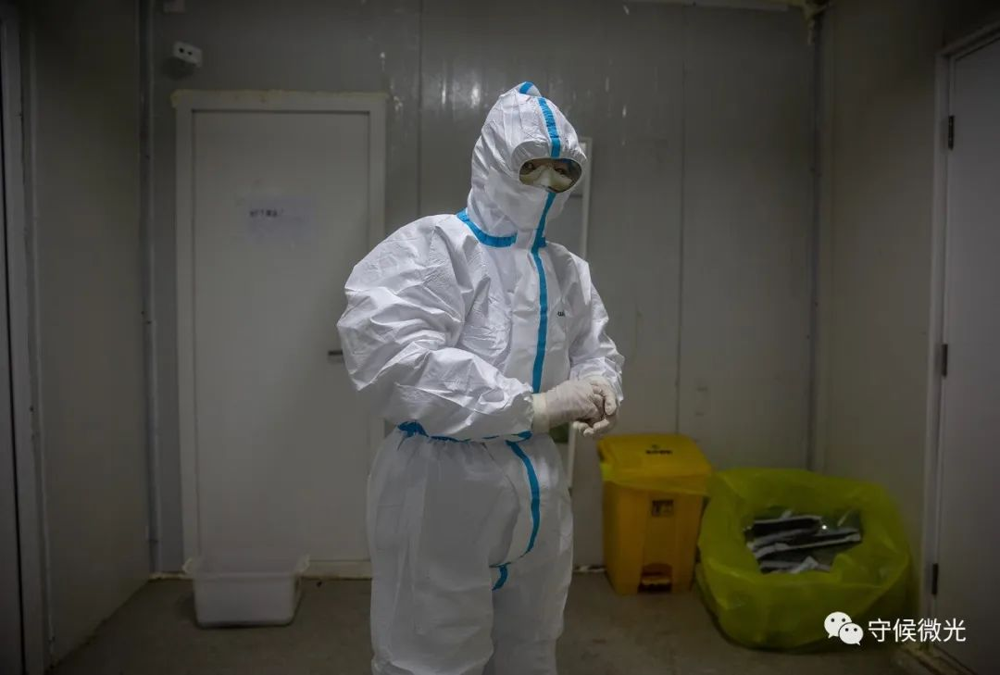
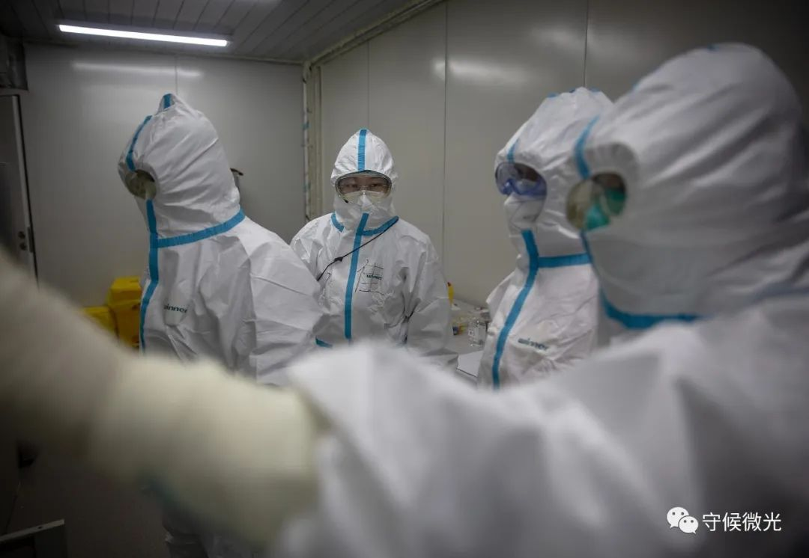
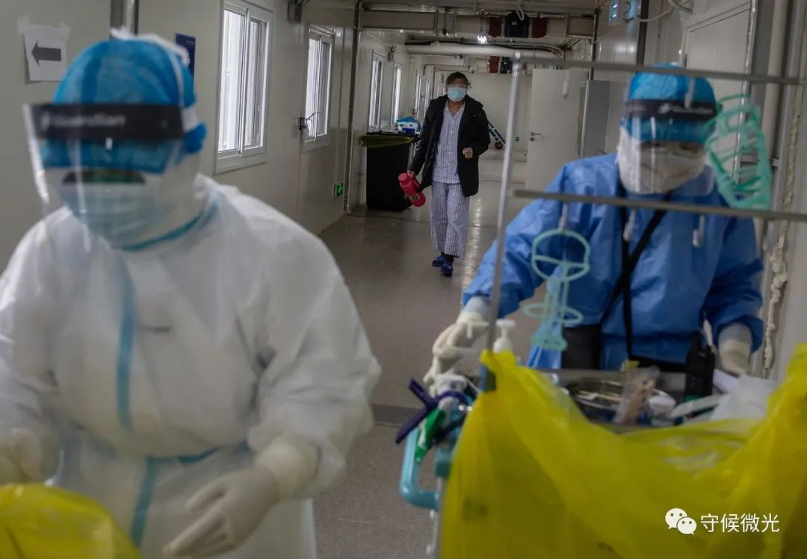
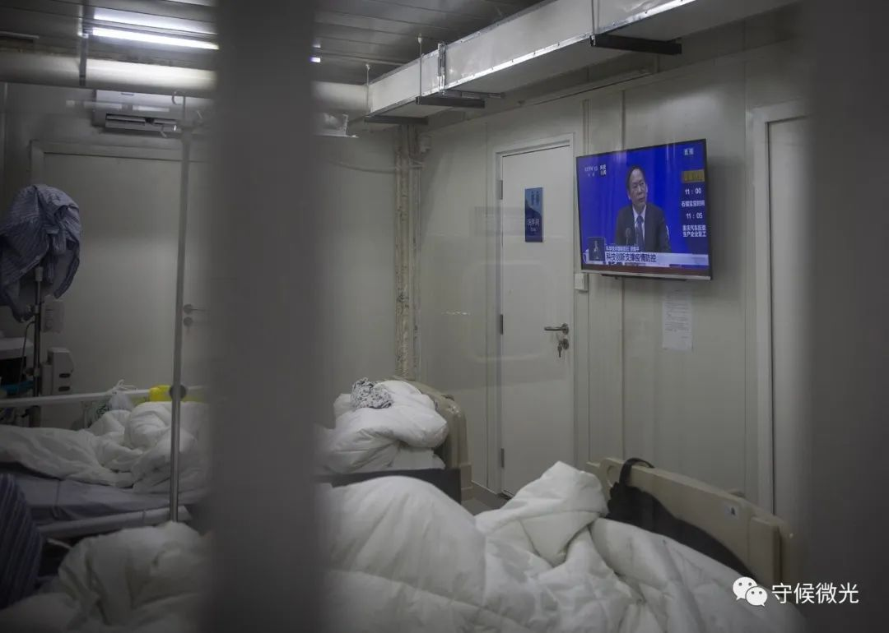

方舱医院里，不只有广场舞
原文链接 备份链接 最早认识武汉是从池莉的小说开始的，烟火味、人情味十足。去过武汉，也就理解了她怎么能写出嘈杂的市井，是三镇的布局、是长江的流淌、是九省通衢的历史。如今，方舱里人间烟火正浓。 一位患者眼中的洪山体育馆方舱医院。周莉/ …
火神山医院内部。李峥苨/拍摄、剪辑
中国青年报 李峥苨 摄影报道
2月21日，武汉市蔡甸区知音湖畔的火神山医院，自接收第一名患者以来已经运转了18天。医院里设有近1000张病床，军队支援湖北医疗队的医护人员在这里为集中收治的新冠肺炎确诊患者提供治疗。
感染八科一区是火神山医院首批接收新冠肺炎患者的病区之一。这里的60张病床几乎住满，由30余名护士轮班负责。
控制传染的弦在这里时刻紧绷着。防护用品的穿和脱都有严格的顺序，带图示的操作提示被打印贴在墙上，随处可见。进⼊隔离病房前，医护人员需要脱掉⾃⼰的服装，换上统⼀清洗消毒的⾐服和胶鞋，按照严格的顺序分区域先后穿上防护服和隔离服，戴上两层⼝罩、头套，3层⼿套、鞋套，再戴上护⽬镜和⾯罩。期间需要反复消毒和确认防护细节，有时需要他人配合，才能完成整套作业。
严格的防护也给治疗工作带来了挑战。血气检查是评价患者呼吸功能及酸碱平衡的一种手段，需要从患者的动脉采血样。戴上3层手套后，感知动脉的跳动变得异常困难。护士们在采血前往手指上抹上酒精，既为了消毒，也为了强化自己的触觉。
隔着好几层口罩，病房里医护和患者的沟通依然顺畅。感染八科一区的护士长左卉川来自河北，病区里许多老年患者只会说湖北方言，同病房的年轻患者会主动在查房时充当翻译，把老年患者的用药、进餐情况记下来告诉医护人员。医患之间还建起了微信群，交流治疗感受。
午餐时，几个医护人员坐在餐桌前打盹，这是他们繁忙工作中少有的可以坐下休息的时间。左卉川说，她和同事们有时需要在防护服中连续⼯作六七个⼩时，⼯作开展的初期，每天只能睡两三个⼩时。
一天后，又一批71名符合出院标准的新冠肺炎患者走出了火神山医院。

2⽉21⽇，武汉⽕神⼭医院感染八科，医护人员在病房内了解患者的情况。中⻘报·中青网记者 李峥苨/摄

2月21日，武汉火神山医院感染八科，一名老年患者食欲不振，医护人员上前询问情况。老人说武汉方言，医护人员分别来自河北和河南，隔壁床的患者主动帮忙翻译，帮助双方沟通。中青报·中青网记者 李峥苨/摄

2月21日，武汉火神山医院感染八科，一名医护人员准备穿上防护服进入病区。为了防止污染，防护服不能着地，穿着过程中需时刻注意。中青报·中青网记者 李峥苨/摄

2月21日，武汉火神山医院感染八科护士站门前，该病区的护士长左卉川（右）在护理部助理员葛雪燕的帮助下戴上第二层口罩。中青报·中青网记者 李峥苨/摄

2月21日，武汉火神山医院感染八科，在为一名患者采动脉血样前，护士长为护士的手指抹上酒精，这既是为了消毒，也为了强化护士的触觉。中青报·中青网记者 李峥苨/摄

2月21日，武汉火神山医院感染八科一区，医护人员准备为一名新冠肺炎患者采动脉血样做血气分析。中青报·中青网记者 李峥苨/摄

2月21日，武汉火神山医院，感染八科的护士长左卉川脱下防护服，准备去吃午餐，脸上是护目镜压出的痕迹。她所在的病区是火神山医院第一批接收新冠肺炎患者的病区之一。中青报·中青网记者 李峥苨/摄

2月21日，武汉火神山医院感染八科，结束巡查工作的护理部助理员葛雪燕按步骤脱下外层隔离服后，用“七步洗手法”清洁双手。长期戴护目镜压伤了鼻梁，她当天在护目镜和鼻子之间垫了一块纸巾缓解压迫感。中青报·中青网记者 李峥苨/摄

2月21日，武汉火神山医院感染八科护士站，值班护士们讨论如何优化工作流程。中青报·中青网记者 李峥苨/摄

2月21日，武汉火神山医院感染八科，护士正收集患者的动脉血样，准备移交检验科，身后一名患者拎着热水壶走过。中青报·中青网记者 李峥苨/摄

2月21日，武汉火神山医院旁的武汉职工疗养院，火神山医院的医护人员在这里吃午餐，几名医护人员在椅子上睡着了。这是他们繁忙的工作中少有的可以坐下休息的时间。中青报·中青网记者 李峥苨/摄

2月21日，武汉火神山医院感染八科，新冠肺炎患者在病房内休息。中青报·中青网记者 李峥苨/摄

2月21日，武汉火神山医院感染八科，医护人员在病床前询问患者的情况。中青报·中青网记者 李峥苨/摄

2月21日，武汉火神山医院感染八科，一位年轻的患者在病房内休息。出于安全考虑，患者病愈出院后，除了贵重物品外的大部分个人物品都无法带出病区。中青报·中青网记者 李峥苨/摄

2月21日，武汉火神山医院感染八科，新冠肺炎患者在病房内的电视上收看当天在北京举办的国务院联防联控机制新闻发布会直播。中青报·中青网记者 李峥苨/摄

2月21日，武汉火神山医院，感染八科的护士长将病区患者的一批动脉血样送到检验科，进行血气分析。中青报·中青网记者 李峥苨/摄
编辑 | 曲俊燕
中国青年报·中青在线出品
微信编辑 | 陈轶男

觉得好看请点这里
原文链接 备份链接 最早认识武汉是从池莉的小说开始的，烟火味、人情味十足。去过武汉，也就理解了她怎么能写出嘈杂的市井，是三镇的布局、是长江的流淌、是九省通衢的历史。如今，方舱里人间烟火正浓。 一位患者眼中的洪山体育馆方舱医院。周莉/ …
原文链接 备份链接 *************▲*************2月4日，医护人员将患者转运至武汉火神山医院病房。 （新华社记者 肖艺九/图） 全文共7126字，阅读大约需要14分钟。 火神山医院从开工到交付使用，只用了大 …
原文链接 备份链接 2月7日上午，武汉市中心医院，市民自发献花悼念因感染新冠肺炎抢救无效逝世的医生李文亮，花束中有一张收据。这里是李文亮生前工作过的院区。2月7日凌晨3点48分，武汉中心医院官方微博宣布，该院眼科医生李文亮经全力抢救无效， …
原文链接 备份链接 数据来源：腾讯新冠肺炎疫情实时追踪 截止2月5日上午7时， 全国新型肺炎个案确诊23696例， 其中湖北患者16678人。 2月3日起，武汉火神山医院开始接诊患者。 武汉另一座“小汤山模式”医院—— 武汉雷神山医院也 …
原文链接 备份链接 1月22日，湖北武汉，菱角湖万达广场开门营业前，商场对工作人员逐一进行体温检测。中青报·中青网记者 李峥苨/摄 1月22日，湖北武汉，菱角湖万达广场开门营业前，商场对工作人员逐一进行体温检测。中青报·中青网记者 李峥 …